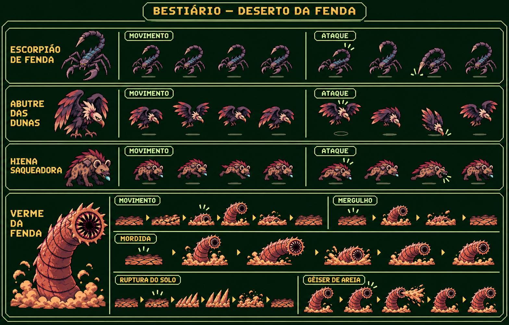

Deserto da Fenda · Beta 0.9.0
Quadros extraídos da imagem fornecida, sem redesenho ou alteração dos RGB retidos. Removidos fundo e elementos de apresentação. Os pontos de apoio e a escala do asset alinham a animação no jogo. A prancha abaixo é apenas uma ferramenta de revisão; cada quadro é usado separadamente na partida.
Referência original
